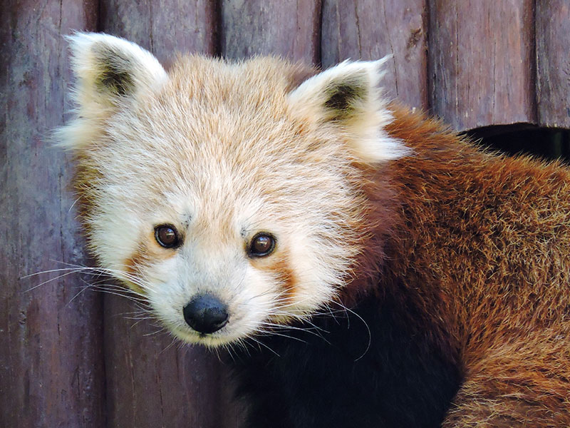
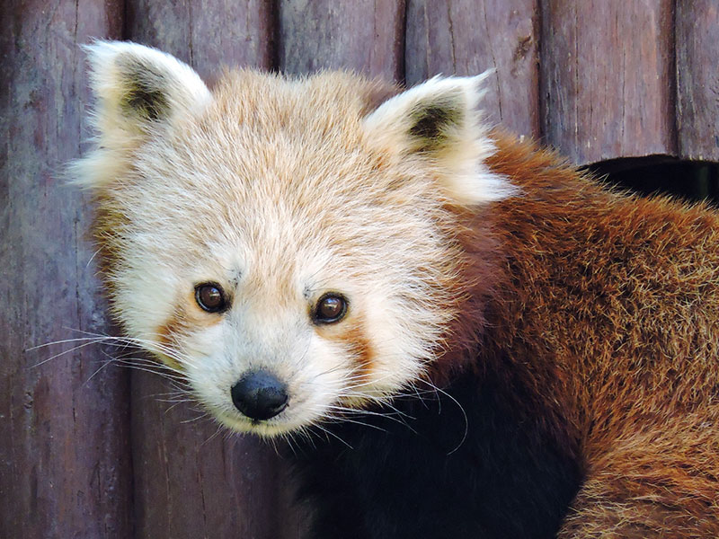

El Panda Rojo es un herbívoro, aunque su dieta es variada. Su principal fuente de alimento son los brotes y hojas de bambú, que constituyen hasta el 95% de su ingesta diaria. Sin embargo, también consume frutas, bayas, raíces, corteza, insectos y pequeños mamíferos, lo que lo convierte en un animal omnívoro en ocasiones. A pesar de ser más pequeño que su pariente más famoso, el Panda Gigante, el Panda Rojo tiene un sistema digestivo que no puede procesar eficientemente el bambú, lo que lo obliga a consumir grandes cantidades de este material fibroso. Su metabolismo es bajo, lo que le permite sobrevivir con una dieta baja en calorías, pero debe comer constantemente para satisfacer sus necesidades energéticas.
El Panda Rojo se encuentra principalmente en las regiones montañosas del Himalaya, el sureste de China, Nepal, India, Bután y Birmania. Prefiere los bosques templados, a menudo a gran altura, entre los 2.200 y los 4.800 metros sobre el nivel del mar. Su hábitat está dominado por bosques densos de coníferas y caducifolias, donde hay abundancia de bambú, su fuente principal de alimento. Sin embargo, debido a la deforestación y la expansión humana, su hábitat natural ha sido fragmentado y reducido, lo que ha afectado su población y lo ha puesto en peligro.
El Panda Rojo está clasificado como "en peligro" por la Unión Internacional para la Conservación de la Naturaleza (UICN) debido a la pérdida de hábitat, la caza furtiva y el comercio ilegal. La destrucción de los bosques de bambú, el cambio climático y la fragmentación de su hábitat contribuyen a la disminución de su población. Aunque existen esfuerzos de conservación, como la creación de reservas naturales y programas de cría en cautiverio, el Panda Rojo sigue enfrentando serias amenazas. La protección de su hábitat y el control de la caza furtiva son cruciales para garantizar su supervivencia a largo plazo.
El Panda Rojo (Ailurus fulgens) es un mamífero nocturno y solitario, conocido por su pelaje rojizo y su cola anillada, que lo hace fácilmente reconocible. A pesar de su nombre, no está estrechamente relacionado con el Panda Gigante, sino que pertenece a una familia distinta llamada Ailuridae. Su comportamiento tranquilo y su aspecto adorable lo han convertido en una especie emblemática, pero, a pesar de su popularidad, el Panda Rojo enfrenta numerosos desafíos en su vida salvaje.
Habitante de las zonas montañosas de Asia, el Panda Rojo se ha visto afectado por la reducción de su hábitat debido a la tala de bosques, lo que ha aislado a las poblaciones y dificultado su supervivencia. Además, el cambio climático amenaza las áreas donde crece el bambú, su principal alimento. Aunque es un animal adaptado a su entorno, el Panda Rojo depende de una frágil cadena ecológica para sobrevivir.
Hoy en día, la conservación del Panda Rojo está siendo impulsada por organizaciones internacionales que buscan proteger sus hábitats naturales, controlar el comercio ilegal y garantizar su supervivencia. Gracias a estos esfuerzos, se ha logrado estabilizar en algunas áreas, pero aún queda mucho por hacer para garantizar que esta especie única siga existiendo en la naturaleza. La historia del Panda Rojo resalta la importancia de la conservación y el equilibrio en los ecosistemas de montaña.
El panda rojo es una especie vulnerable que necesita de nuestro respeto y cuidado para su conservación. Si tienes la suerte de ver uno dentro de la reserva, sigue estas recomendaciones:
- Mantén la distancia: Observa sin acercarte demasiado. Son animales reservados y pueden sentirse amenazados si te acercas demasiado.
- No los alimentes: Su dieta es específica y cualquier alimento ajeno a su alimentación natural puede ser dañino para su salud.
- Evita hacer ruido: Son sensibles a los sonidos fuertes, los cuales pueden causarles estrés y alterar su comportamiento. Habla en voz baja y respeta la tranquilidad del entorno.
- No intentes tocarlos ni perseguirlos: Aunque sean adorables, es esencial no interferir con su comportamiento natural.
- Respeta los senderos y áreas designadas: Esto protege su hábitat y minimiza el impacto humano en su ecosistema.